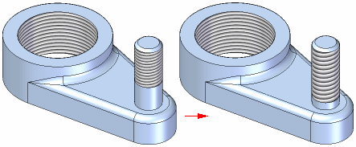

Thread extent definition and tapered threads
Both the Hole and Thread commands allow you to specify the length or extent of the thread. You can specify that the thread extent is for the full length of the cylindrical face or a finite extent you define. The thread extent you specify is accurately depicted in the graphic window. When you edit the thread extent definition, the graphic display updates.

Tapered threaded features
When constructing an external tapered, threaded feature using the Thread command, you do not need to construct a conical face first. When you define a tapered threaded feature to a cylindrical face, the taper angle is added to threaded portion of the cylinder when you finish the feature.

You can use the Hole command to construct internal, tapered pipe threads. When you set the Type option to Threaded on the Hole Options dialog box, you can set the thread type to Tapered Pipe Thread.
How do I
Add a thread reference to a featureLearn more
Threaded featuresDisplaying threads realistically in a shaded view
Available thread sizes with the Thread command
Editing threaded features
Depicting threads on drawings
Look up more details
Thread commandThread command bar (synchronous)
Thread command bar (ordered)
Thread Options dialog box (synchronous)
Thread Options dialog box (ordered)